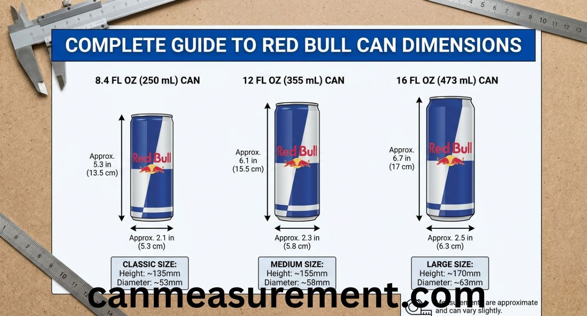
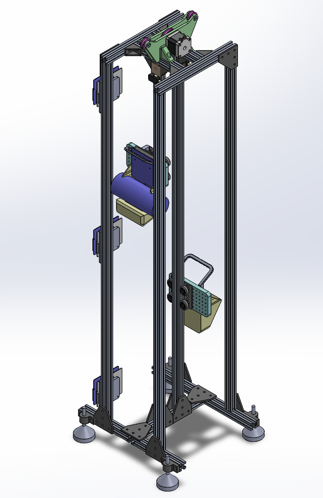
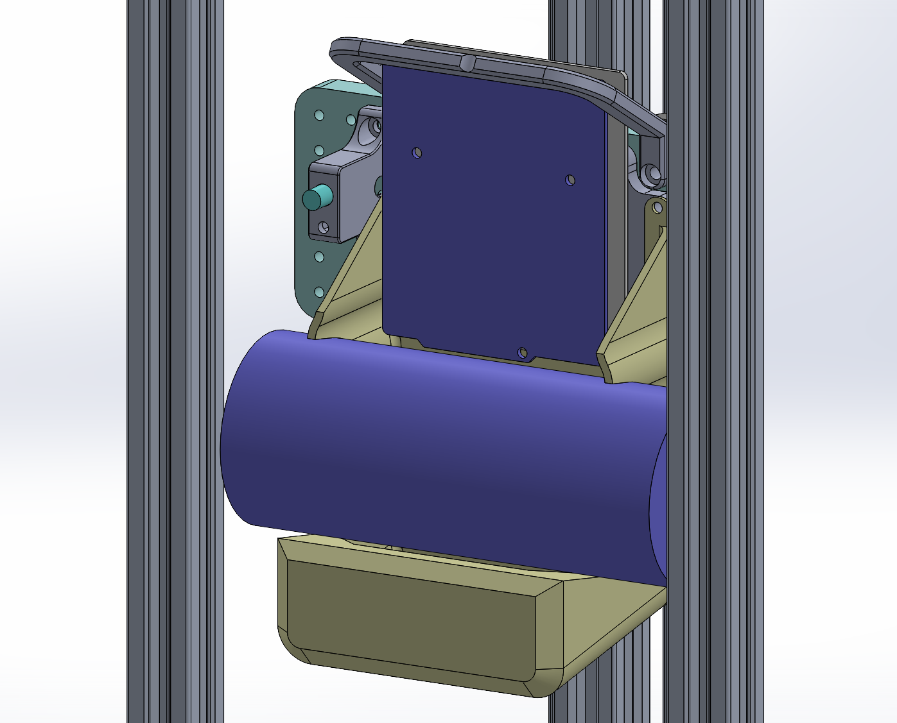
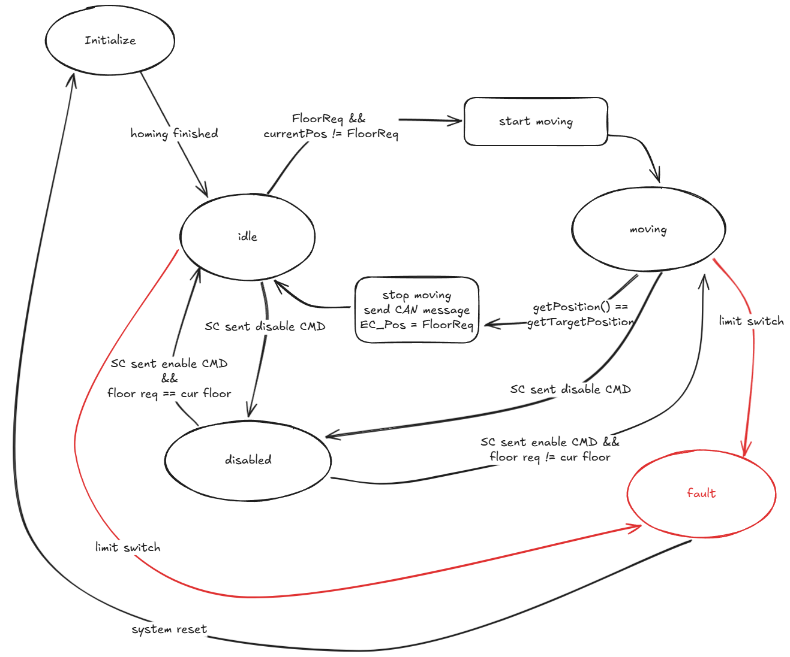

CAD development and full EC CAN protocol implementation
My logbook cover page
As initial motion system testing showed (see
2026-06-13 logbook entry),
the elevator car and counterweight need to have additional mass
ballast to ensure the rope is tensioned enough for the sufficient
grip between rope and pulley wheel. Previously a temporary
solution was implemented: cardboard box and bags with fasteners
were used. To complete phase 1, I want to model a compartment
to replace the temporary mount.
Additionally, counterweight and car ballast boxes should be
different to allow the car to carry a payload up and down the floors.

CAD model was finished.

Additionally, to satisfy the professor's requirements, I modelled a toggle switch mount that simulates the elevator door. It has room for a tumbler switch and a status LED, which indicates if the door is open or not.

I implemented full EC CAN bus logic and FSM. Unlike previously, when I simply replied to any packet with another packet, this implementation handles all necessary interactions according to the set protocol:
LiF-CAN and LiF-Motor module APIs.
